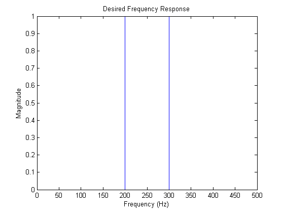
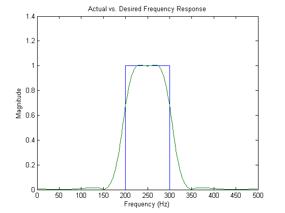
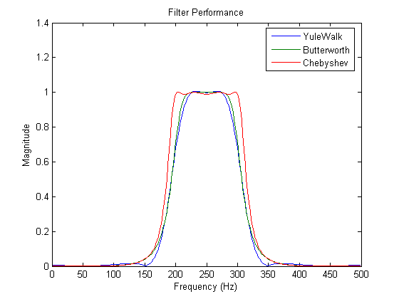
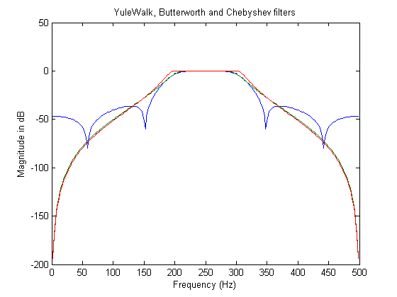

The Signal Processing Toolbox comes with tools to design bandpass filters. These tools include the YULEWALK, BUTTER and CHEBY1 functions.
We will design several filters for the following normalized frequencies and desired frequency response. First, specify the desired frequency response point-wise, with 1.0 corresponding to half the sample rate. Plot the desired frequency response to make sure it is what we want (unnormalize the frequency axis).
f = [0 .4 .4 .6 .6 1]; H = [0 0 1 1 0 0]; fs = 1000; % assumed sampling rate fhz = f*fs/2; plot(fhz,H) title('Desired Frequency Response') xlabel('Frequency (Hz)') ylabel('Magnitude')
The YULEWALK function lets you to specify a piecewise shape for the desired frequency response magnitude. It then finds an infinite-impulse response filter of the desired order that fits the frequency response in a least-squares sense. Use YULEWALK to compute the coefficients of an 8th order filter that will approximate our desired response. Plot the frequency response magnitude and compare it to the desired response.
N = 8; % Order of the filter (number of poles and zeros). [Bh,Ah] = yulewalk(N,f,H); % Working, please wait..... n = 256; hh = freqz(Bh,Ah,n); % compute complex frequency response hy = abs(hh); % compute magnitude ff = fs/(2*n) * (0:n-1); plot(fhz,H,ff,hy) title('Actual vs. Desired Frequency Response') xlabel('Frequency (Hz)') ylabel('Magnitude')
Now let's design Butterworth and Chebyshev bandpass filters with the same passband (defined between 0.0 and 1.0). Here we compare all three frequency responses.
N = 4; passband = [.4 .6]; ripple = .1;
[Bb,Ab] = butter(N, passband);
[Bc,Ac] = cheby1(N, ripple, passband);
h = [abs(hh) abs(freqz(Bb,Ab,n)) abs(freqz(Bc,Ac,n))];
plot(ff,h)
legend({'YuleWalk','Butterworth','Chebyshev'});
title('Filter Performance')
xlabel('Frequency (Hz)')
ylabel('Magnitude')
 Finally, look at the frequency response on a logarithmic decibel (dB) scale.
plot(ff(2:n),20*log10(h(2:n,:))) title('YuleWalk, Butterworth and Chebyshev filters') xlabel('Frequency (Hz)') ylabel('Magnitude in dB')